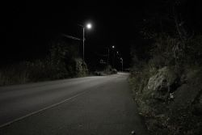
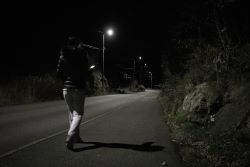
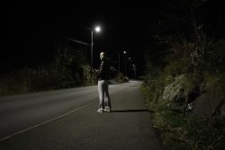
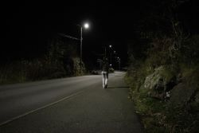
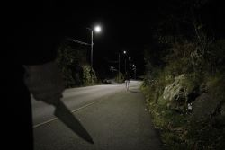

1/5
Første bildet som kun viser scenen

2/5
Andre bildet som viser en jente som går langs veien på mobilen

3/5
Tredje bilde viser jenten stoppe og snu seg, antageligvis for å se om noen følger etter

4/5
Fjerde bilde viser jenten snu seg igjen og gå videre, som om ingenting er der

5/5
Femte og siste bilde viser en hånd holde en kniv mens jenten går forrover, uten å se han.
Jeg hadde egentlig planlagt en annen situasjon, men på grunn av utfordringer med casting og location måtte jeg reevaluere og finne en mer praktisk løsning. Jeg vil likevel sørge for at bildene beholder høy kvalitet, med mer fokus på planleggingen.
Ut fra det jeg har tilgjengelig, tenkte jeg at det ville være både praktisk og effektfullt å ta bildene med vennen min. Det gir også en skumlere stemning. Jeg vurderte først å ha henne som et klassisk offer i nød, men kom frem til at det ville være mer urovekkende om hun ikke visste at hun skulle bli drept.
Min idé er å sette opp kameraet på et stativ med utsikt nedover en vei på kvelden, hvor vi bruker ledende linjer til å gå innover i bildet. Området er belyset av lyktestolper og ingen andre er med i situasjonen. Dette skal være den eneste vinkelen gjennom hele sekvensen. Vi ser offeret gå nedover veien med mobilen i hånden, men stopper kort for å se seg rundt som om hun hørte noe. Hun ender opp med å fortsette, fjeset dypt i telefonen med ingen bevissthet for det rundt seg. Deretter plasserer vi en annen skuespiller nær kameraet, vendt mot veien, med en kniv synlig i hånden som tar opp en stor del av bildet. I bakgrunnen, på motsatt side av rammen, skal vi ha en person som løper vekk. Kameraet fanger både kniven og offeret, og antyder at hun snart vil bli drept.